An airplane is flying at an airspeed of 200 miles per hour headed on a SE bearing of 140°. A north wind (from north to south) is blowing at 16.2 miles per hour, as shown in . What are the ground speed and actual bearing of the plane?
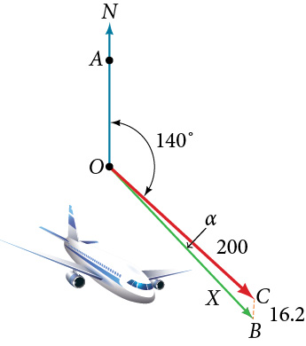
Ground speed refers to the speed of a plane relative to the ground. Airspeed refers to the speed a plane can travel relative to its surrounding air mass. These two quantities are not the same because of the effect of wind. In an earlier section, we used triangles to solve a similar problem involving the movement of boats. Later in this section, we will find the airplane’s groundspeed and bearing, while investigating another approach to problems of this type. First, however, let’s examine the basics of vectors.
A Geometric View of Vectors
A vector is a specific quantity drawn as a line segment with an arrowhead at one end. It has an initial point, where it begins, and a terminal point, where it ends. A vector is defined by its magnitude, or the length of the line, and its direction, indicated by an arrowhead at the terminal point. Thus, a vector is a directed line segment. There are various symbols that distinguish vectors from other quantities:
Lower case, boldfaced type, with or without an arrow on top such as
Given initial point and terminal point a vector can be represented as The arrowhead on top is what indicates that it is not just a line, but a directed line segment.
Given an initial point of and terminal point a vector may be represented as
This last symbol has special significance. It is called the standard position. The position vector has an initial point and a terminal point To change any vector into the position vector, we think about the change in the x-coordinates and the change in the y-coordinates. Thus, if the initial point of a vector is and the terminal point is then the position vector is found by calculating
In , we see the original vector and the position vector
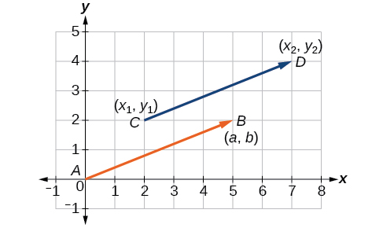
Properties of Vectors
A vector is a directed line segment with an initial point and a terminal point. Vectors are identified by magnitude, or the length of the line, and direction, represented by the arrowhead pointing toward the terminal point. The position vector has an initial point at and is identified by its terminal point
Find the Position Vector
Consider the vector whose initial point is and terminal point is Find the position vector.
The position vector is found by subtracting one x-coordinate from the other x-coordinate, and one y-coordinate from the other y-coordinate. Thus
The position vector begins at and terminates at The graphs of both vectors are shown in .
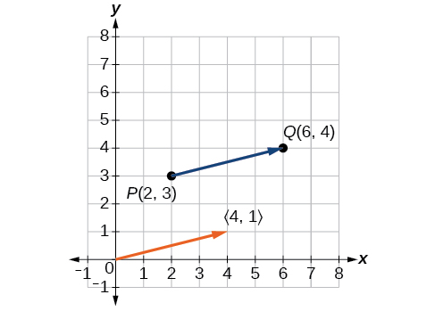
We see that the position vector is
Drawing a Vector with the Given Criteria and Its Equivalent Position Vector
Find the position vector given that vectorhas an initial point at and a terminal point at then graph both vectors in the same plane.
The position vector is found using the following calculation:
Thus, the position vector begins at and terminates at See .
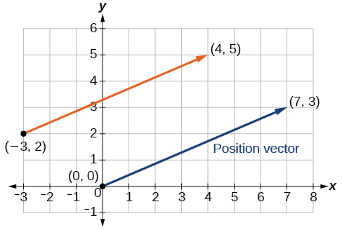
Draw a vectorthat connects from the origin to the point
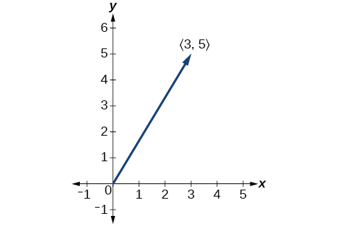
Finding Magnitude and Direction
To work with a vector, we need to be able to find its magnitude and its direction. We find its magnitude using the Pythagorean Theorem or the distance formula, and we find its direction using the inverse tangent function.
Magnitude and Direction of a Vector
Given a position vector the magnitude is found by The direction is equal to the angle formed with the x-axis, or with the y-axis, depending on the application. For a position vector, the direction is found by as illustrated in .
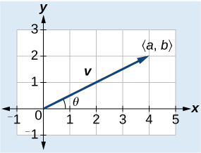
Two vectors v and u are considered equal if they have the same magnitude and the same direction. Additionally, if both vectors have the same position vector, they are equal.
Finding the Magnitude and Direction of a Vector
Find the magnitude and direction of the vector with initial point and terminal point Draw the vector.
First, find the position vector.
We use the Pythagorean Theorem to find the magnitude.
The direction is given as
However, the angle terminates in the fourth quadrant, so we add 360° to obtain a positive angle. Thus, See .
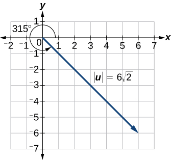
Showing That Two Vectors Are Equal
Show that vector v with initial point at and terminal point at is equal to vector u with initial point at and terminal point at Draw the position vector on the same grid as v and u. Next, find the magnitude and direction of each vector.
As shown in , draw the vector starting at initial and terminal point Draw the vector with initial point and terminal point Find the standard position for each.
Next, find and sketch the position vector for v and u. We have
Since the position vectors are the same, v and u are the same.
An alternative way to check for vector equality is to show that the magnitude and direction are the same for both vectors. To show that the magnitudes are equal, use the Pythagorean Theorem.
As the magnitudes are equal, we now need to verify the direction. Using the tangent function with the position vector gives
However, we can see that the position vector terminates in the second quadrant, so we add Thus, the direction is
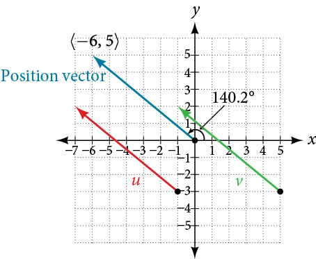
Performing Vector Addition and Scalar Multiplication
Now that we understand the properties of vectors, we can perform operations involving them. While it is convenient to think of the vector as an arrow or directed line segment from the origin to the point vectors can be situated anywhere in the plane. The sum of two vectors u and v, or vector addition, produces a third vector u + v, the resultant vector.
To find u + v, we first draw the vector u, and from the terminal end of u, we drawn the vector v. In other words, we have the initial point of v meet the terminal end of u. This position corresponds to the notion that we move along the first vector and then, from its terminal point, we move along the second vector. The sum u + v is the resultant vector because it results from addition or subtraction of two vectors. The resultant vector travels directly from the beginning of u to the end of v in a straight path, as shown in .
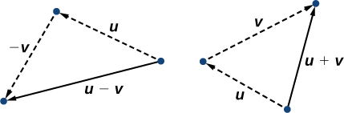
Vector subtraction is similar to vector addition. To find u − v, view it as u + (−v). Adding −v is reversing direction of v and adding it to the end of u. The new vector begins at the start of u and stops at the end point of −v. See for a visual that compares vector addition and vector subtraction using parallelograms.
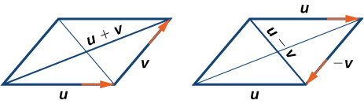
Adding and Subtracting Vectors
Given and find two new vectors u + v, and u − v.
To find the sum of two vectors, we add the components. Thus,
See (a).
To find the difference of two vectors, add the negative components oftoThus,
See (b).
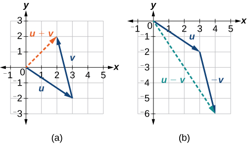
(a) Sum of two vectors (b) Difference of two vectors
Multiplying By a Scalar
While adding and subtracting vectors gives us a new vector with a different magnitude and direction, the process of multiplying a vector by a scalar, a constant, changes only the magnitude of the vector or the length of the line. Scalar multiplication has no effect on the direction unless the scalar is negative, in which case the direction of the resulting vector is opposite the direction of the original vector.
Scalar Multiplication
Scalar multiplication involves the product of a vector and a scalar. Each component of the vector is multiplied by the scalar. Thus, to multiply by , we have
Only the magnitude changes, unless is negative, and then the vector reverses direction.
Performing Scalar Multiplication
Given vector find 3v, and −v.
See for a geometric interpretation. If then
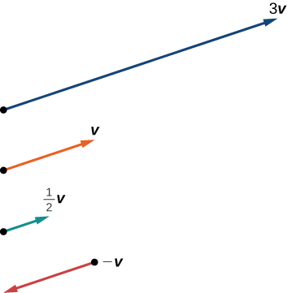
Analysis
Notice that the vector 3v is three times the length of v, is half the length of v, and –v is the same length of v, but in the opposite direction.
Find the scalar multiple 3 given
Using Vector Addition and Scalar Multiplication to Find a New Vector
Given and find a new vector w = 3u + 2v.
First, we must multiply each vector by the scalar.
Then, add the two together.
So,
Finding Component Form
In some applications involving vectors, it is helpful for us to be able to break a vector down into its components. Vectors are comprised of two components: the horizontal component is the direction, and the vertical component is the direction. For example, we can see in the graph in that the position vector comes from adding the vectors v1 and v2. We have v1 with initial point and terminal point
We also have v2 with initial point and terminal point
Therefore, the position vector is
Using the Pythagorean Theorem, the magnitude of v1 is 2, and the magnitude of v2 is 3. To find the magnitude of v, use the formula with the position vector.
The magnitude of v is To find the direction, we use the tangent function
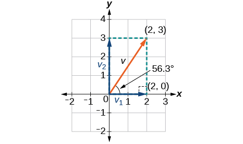
Thus, the magnitude ofis and the direction is off the horizontal.
Finding the Components of the Vector
Find the components of the vectorwith initial point and terminal point
First find the standard position.
See the illustration in .
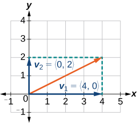
The horizontal component is and the vertical component is
Finding the Unit Vector in the Direction of v
In addition to finding a vector’s components, it is also useful in solving problems to find a vector in the same direction as the given vector, but of magnitude 1. We call a vector with a magnitude of 1 a unit vector. We can then preserve the direction of the original vector while simplifying calculations.
Unit vectors are defined in terms of components. The horizontal unit vector is written as and is directed along the positive horizontal axis. The vertical unit vector is written as and is directed along the positive vertical axis. See .
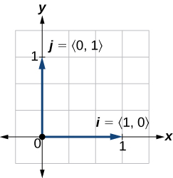
The Unit Vectors
Ifis a nonzero vector, thenis a unit vector in the direction ofAny vector divided by its magnitude is a unit vector. Notice that magnitude is always a scalar, and dividing by a scalar is the same as multiplying by the reciprocal of the scalar.
Finding the Unit Vector in the Direction of v
Find a unit vector in the same direction as
First, we will find the magnitude.
Then we divide each component by which gives a unit vector in the same direction as v:
or, in component form
See .
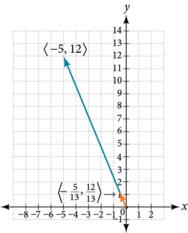
Verify that the magnitude of the unit vector equals 1. The magnitude of is given as
The vector uij is the unit vector in the same direction as v
Performing Operations with Vectors in Terms of i and j
So far, we have investigated the basics of vectors: magnitude and direction, vector addition and subtraction, scalar multiplication, the components of vectors, and the representation of vectors geometrically. Now that we are familiar with the general strategies used in working with vectors, we will represent vectors in rectangular coordinates in terms of i and j.
Vectors in the Rectangular Plane
Given a vectorwith initial point and terminal point v is written as
The position vector from to where and is written as v = ai + bj. This vector sum is called a linear combination of the vectors i and j.
The magnitude of v = ai + bj is given as See .
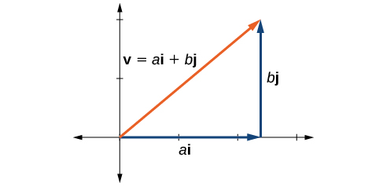
Writing a Vector in Terms of i and j
Given a vectorwith initial point and terminal point write the vector in terms ofand
Begin by writing the general form of the vector. Then replace the coordinates with the given values.
Writing a Vector in Terms of i and j Using Initial and Terminal Points
Given initial point and terminal point write the vectorin terms ofand
Begin by writing the general form of the vector. Then replace the coordinates with the given values.
Write the vectorwith initial point and terminal point in terms ofand
Performing Operations on Vectors in Terms of i and j
When vectors are written in terms ofandwe can carry out addition, subtraction, and scalar multiplication by performing operations on corresponding components.
Adding and Subtracting Vectors in Rectangular Coordinates
Given v = ai + bj and u = ci + dj, then
Finding the Sum of the Vectors
Find the sum of and
According to the formula, we have
Calculating the Component Form of a Vector: Direction
We have seen how to draw vectors according to their initial and terminal points and how to find the position vector. We have also examined notation for vectors drawn specifically in the Cartesian coordinate plane using For any of these vectors, we can calculate the magnitude. Now, we want to combine the key points, and look further at the ideas of magnitude and direction.
Calculating direction follows the same straightforward process we used for polar coordinates. We find the direction of the vector by finding the angle to the horizontal. We do this by using the basic trigonometric identities, but withreplacing
Vector Components in Terms of Magnitude and Direction
Given a position vector and a direction angle
Thus, and magnitude is expressed as
Writing a Vector in Component Form When It Is Given in Magnitude and Direction Form
Given a vector with length 7 and an angle of 135°, write it in component form.
Using the conversion formulas and we find that
This vector can be written as or simplified as
A vector travels from the origin to the point Write the vector in terms of magnitude and direction.
Magnitude =
Finding the Dot Product of Two Vectors
As we discussed earlier in the section, scalar multiplication involves multiplying a vector by a scalar, and the result is a vector. As we have seen, multiplying a vector by a number is called scalar multiplication. If we multiply a vector by a vector, there are two possibilities: the dot product and the cross product. We will only examine the dot product here; you may encounter the cross product in more advanced mathematics courses.
The dot product of two vectors involves multiplying two vectors together, and the result is a scalar.
Dot Product
The dot product of two vectors and is the sum of the product of the horizontal components and the product of the vertical components.
To find the angle between the two vectors, use the formula below.
Finding the Dot Product of Two Vectors
Find the dot product ofand
Using the formula, we have
Finding the Dot Product of Two Vectors and the Angle between Them
Find the dot product of v1 = 5i + 2j and v2 = 3i + 7j. Then, find the angle between the two vectors.
Finding the dot product, we multiply corresponding components.
To find the angle between them, we use the formula
See .
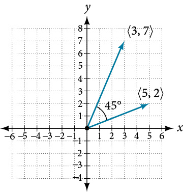
Finding the Angle between Two Vectors
Find the angle between and
Using the formula, we have
See .
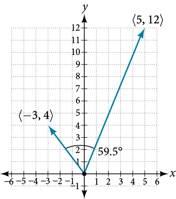
Finding Ground Speed and Bearing Using Vectors
We now have the tools to solve the problem we introduced in the opening of the section.
An airplane is flying at an airspeed of 200 miles per hour headed on a SE bearing of 140°. A north wind (from north to south) is blowing at 16.2 miles per hour. What are the ground speed and actual bearing of the plane? See .
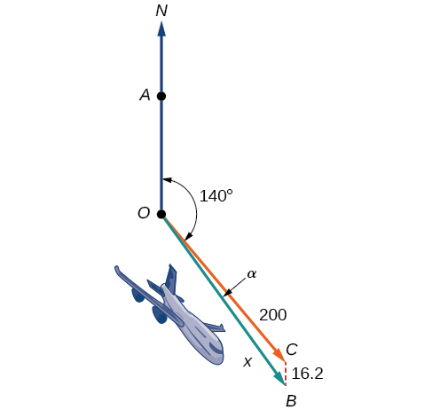
The ground speed is represented by in the diagram, and we need to find the angle in order to calculate the adjusted bearing, which will be
Notice in , that angle must be equal to angle by the rule of alternating interior angles, so angle is 140°. We can find by the Law of Cosines:
The ground speed is approximately 213 miles per hour. Now we can calculate the bearing using the Law of Sines.
Therefore, the plane has a SE bearing of 140°+2.8°=142.8°. The ground speed is 212.7 miles per hour.
Access these online resources for additional instruction and practice with vectors.
The position vector has its initial point at the origin. See .
If the position vector is the same for two vectors, they are equal. See .
Vectors are defined by their magnitude and direction. See .
If two vectors have the same magnitude and direction, they are equal. See .
Vector addition and subtraction result in a new vector found by adding or subtracting corresponding elements. See .
Scalar multiplication is multiplying a vector by a constant. Only the magnitude changes; the direction stays the same. See and .
Vectors are comprised of two components: the horizontal component along the positive x-axis, and the vertical component along the positive y-axis. See .
The unit vector in the same direction of any nonzero vector is found by dividing the vector by its magnitude.
The magnitude of a vector in the rectangular coordinate system is See .
In the rectangular coordinate system, unit vectors may be represented in terms of and whererepresents the horizontal component andrepresents the vertical component. Then, v = ai + bj is a scalar multiple ofby real numbers See and .
Adding and subtracting vectors in terms of i and j consists of adding or subtracting corresponding coefficients of i and corresponding coefficients of j. See .
A vector v = ai + bj is written in terms of magnitude and direction as See .
The dot product of two vectors is the product of theterms plus the product of theterms. See .
We can use the dot product to find the angle between two vectors. and .
Dot products are useful for many types of physics applications. See .
Section Exercises
Verbal
What are the characteristics of the letters that are commonly used to represent vectors?
lowercase, bold letter, usually
How is a vector more specific than a line segment?
What areandand what do they represent?
They are unit vectors. They are used to represent the horizontal and vertical components of a vector. They each have a magnitude of 1.
What is component form?
When a unit vector is expressed as which letter is the coefficient of theand which the
The first number always represents the coefficient of the and the second represents the
Algebraic
Given a vector with initial point and terminal point find an equivalent vector whose initial point is Write the vector in component form
Given a vector with initial point and terminal point find an equivalent vector whose initial point is Write the vector in component form
Given a vector with initial point and terminal point find an equivalent vector whose initial point is Write the vector in component form
For the following exercises, determine whether the two vectorsandare equal, wherehas an initial point and a terminal point and has an initial point and a terminal point .
and
not equal
and
and
equal
and
and
equal
Given initial point and terminal point write the vectorin terms ofand
Given initial point and terminal point write the vectorin terms ofand
For the following exercises, use the vectors u = i + 5j, v = −2i− 3j, and w = 4i − j.
Find u + (v − w)
Find 4v + 2u
For the following exercises, use the given vectors to compute u + v, u − v, and 2u − 3v.
Let v = −4i + 3j. Find a vector that is half the length and points in the same direction as
Let v = 5i + 2j. Find a vector that is twice the length and points in the opposite direction as
For the following exercises, find a unit vector in the same direction as the given vector.
a = 3i + 4j
b = −2i + 5j
c = 10i – j
u = 100i + 200j
u = −14i + 2j
For the following exercises, find the magnitude and direction of the vector,
Given u = 3i − 4j and v = −2i + 3j, calculate
Given u = −i − j and v = i + 5j, calculate
Given and calculate
Given u and v calculate
Graphical
For the following exercises, givendraw3v and
For the following exercises, use the vectors shown to sketch u + v, u − v, and 2u.
For the following exercises, use the vectors shown to sketch 2u + v.
For the following exercises, use the vectors shown to sketch u − 3v.
For the following exercises, write the vector shown in component form.
Given initial point and terminal point write the vectorin terms ofandthen draw the vector on the graph.
Given initial point and terminal point write the vectorin terms ofandDraw the points and the vector on the graph.
Given initial point and terminal point write the vectorin terms ofandDraw the points and the vector on the graph.
Extensions
For the following exercises, use the given magnitude and direction in standard position, write the vector in component form.
A 60-pound box is resting on a ramp that is inclined 12°. Rounding to the nearest tenth,
ⓐ Find the magnitude of the normal (perpendicular) component of the force.
ⓑ Find the magnitude of the component of the force that is parallel to the ramp.
ⓐ 58.7
ⓑ 12.5
A 25-pound box is resting on a ramp that is inclined 8°. Rounding to the nearest tenth,
ⓐ Find the magnitude of the normal (perpendicular) component of the force.
ⓑ Find the magnitude of the component of the force that is parallel to the ramp.
Find the magnitude of the horizontal and vertical components of a vector with magnitude 8 pounds pointed in a direction of 27° above the horizontal. Round to the nearest hundredth.
pounds, pounds
Find the magnitude of the horizontal and vertical components of the vector with magnitude 4 pounds pointed in a direction of 127° above the horizontal. Round to the nearest hundredth.
Find the magnitude of the horizontal and vertical components of a vector with magnitude 5 pounds pointed in a direction of 55° above the horizontal. Round to the nearest hundredth.
pounds, pounds
Find the magnitude of the horizontal and vertical components of the vector with magnitude 1 pound pointed in a direction of 8° above the horizontal. Round to the nearest hundredth.
Real-World Applications
A woman leaves home and walks 3 miles west, then 2 miles southwest. How far from home is she, and in what direction must she walk to head directly home?
4.635 miles, 17.764° N of E
A boat leaves the marina and sails 6 miles north, then 2 miles northeast. How far from the marina is the boat, and in what direction must it sail to head directly back to the marina?
A man starts walking from home and walks 4 miles east, 2 miles southeast, 5 miles south, 4 miles southwest, and 2 miles east. How far has he walked? If he walked straight home, how far would he have to walk?
17 miles. 10.318 miles
A woman starts walking from home and walks 4 miles east, 7 miles southeast, 6 miles south, 5 miles southwest, and 3 miles east. How far has she walked? If she walked straight home, how far would she have to walk?
A man starts walking from home and walks 3 miles at 20° north of west, then 5 miles at 10° west of south, then 4 miles at 15° north of east. If he walked straight home, how far would he have to the walk, and in what direction?
Distance: 2.868. Direction: 86.474° North of West, or 3.526° West of North
A woman starts walking from home and walks 6 miles at 40° north of east, then 2 miles at 15° east of south, then 5 miles at 30° south of west. If she walked straight home, how far would she have to walk, and in what direction?
An airplane is heading north at an airspeed of 600 km/hr, but there is a wind blowing from the southwest at 80 km/hr. How many degrees off course will the plane end up flying, and what is the plane’s speed relative to the ground?
4.924°. 659 km/hr
An airplane is heading north at an airspeed of 500 km/hr, but there is a wind blowing from the northwest at 50 km/hr. How many degrees off course will the plane end up flying, and what is the plane’s speed relative to the ground?
An airplane needs to head due north, but there is a wind blowing from the southwest at 60 km/hr. The plane flies with an airspeed of 550 km/hr. To end up flying due north, how many degrees west of north will the pilot need to fly the plane?
4.424°
An airplane needs to head due north, but there is a wind blowing from the northwest at 80 km/hr. The plane flies with an airspeed of 500 km/hr. To end up flying due north, how many degrees west of north will the pilot need to fly the plane?
As part of a video game, the point is rotated counterclockwise about the origin through an angle of 35°. Find the new coordinates of this point.
As part of a video game, the point is rotated counterclockwise about the origin through an angle of 40°. Find the new coordinates of this point.
Two children are throwing a ball back and forth straight across the back seat of a car. The ball is being thrown 10 mph relative to the car, and the car is traveling 25 mph down the road. If one child doesn't catch the ball, and it flies out the window, in what direction does the ball fly (ignoring wind resistance)?
21.801°, relative to the car’s forward direction
Two children are throwing a ball back and forth straight across the back seat of a car. The ball is being thrown 8 mph relative to the car, and the car is traveling 45 mph down the road. If one child doesn't catch the ball, and it flies out the window, in what direction does the ball fly (ignoring wind resistance)?
A 50-pound object rests on a ramp that is inclined 19°. Find the magnitude of the components of the force parallel to and perpendicular to (normal) the ramp to the nearest tenth of a pound.
parallel: 16.28, perpendicular: 47.28 pounds
Suppose a body has a force of 10 pounds acting on it to the right, 25 pounds acting on it upward, and 5 pounds acting on it 45° from the horizontal. What single force is the resultant force acting on the body?
Suppose a body has a force of 10 pounds acting on it to the right, 25 pounds acting on it ─135° from the horizontal, and 5 pounds acting on it directed 150° from the horizontal. What single force is the resultant force acting on the body?
19.35 pounds, 231.54° from the horizontal
The condition of equilibrium is when the sum of the forces acting on a body is the zero vector. Suppose a body has a force of 2 pounds acting on it to the right, 5 pounds acting on it upward, and 3 pounds acting on it 45° from the horizontal. What single force is needed to produce a state of equilibrium on the body?
Suppose a body has a force of 3 pounds acting on it to the left, 4 pounds acting on it upward, and 2 pounds acting on it 30° from the horizontal. What single force is needed to produce a state of equilibrium on the body? Draw the vector.
5.1583 pounds, 75.8° from the horizontal
Chapter Review Exercises
Non-right Triangles: Law of Sines
For the following exercises, assume is opposite side is opposite side and is opposite side Solve each triangle, if possible. Round each answer to the nearest tenth.
Not possible
Solve the triangle.
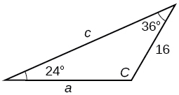
Find the area of the triangle.
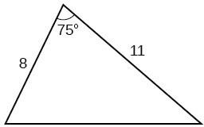
A pilot is flying over a straight highway. He determines the angles of depression to two mileposts, 2.1 km apart, to be 25° and 49°, as shown in . Find the distance of the plane from point and the elevation of the plane.
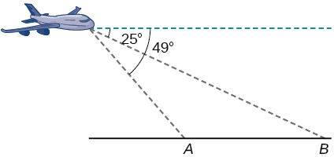
distance of the plane from point 2.2 km, elevation of the plane: 1.6 km
Non-right Triangles: Law of Cosines
Solve the triangle, rounding to the nearest tenth, assuming is opposite side is opposite side and is opposite side
Solve the triangle in , rounding to the nearest tenth.
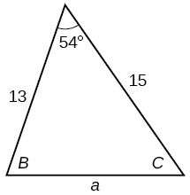
Find the area of a triangle with sides of length 8.3, 6.6, and 9.1.
To find the distance between two cities, a satellite calculates the distances and angle shown in (not to scale). Find the distance between the cities. Round answers to the nearest tenth.
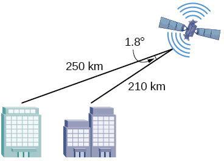
40.6 km
Polar Coordinates
Plot the point with polar coordinates
Plot the point with polar coordinates
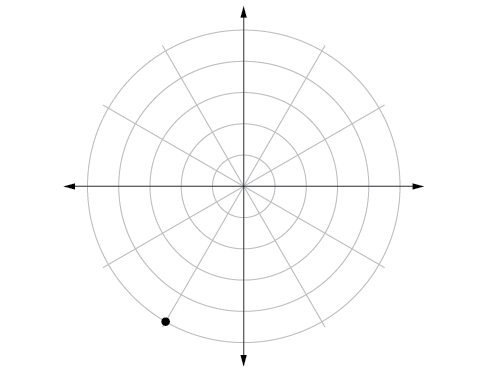
Convert to rectangular coordinates.
Convert to rectangular coordinates.
Convert to polar coordinates.
Convert
to polar coordinates.
For the following exercises, convert the given Cartesian equation to a polar equation.
For the following exercises, convert the given polar equation to a Cartesian equation.
For the following exercises, convert to rectangular form and graph.
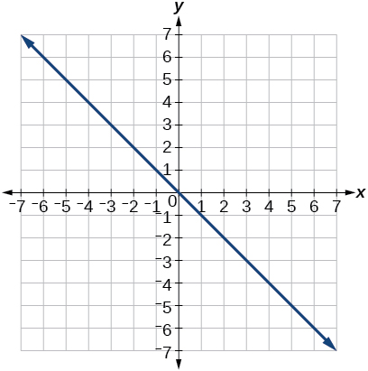
Polar Coordinates: Graphs
For the following exercises, test each equation for symmetry.
symmetric with respect to the line
Sketch a graph of the polar equation Label the axis intercepts.
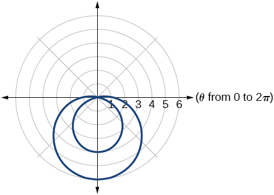
Sketch a graph of the polar equation
Sketch a graph of the polar equation
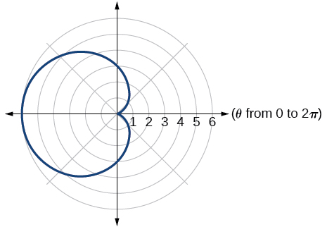
Polar Form of Complex Numbers
For the following exercises, find the absolute value of each complex number.
5
Write the complex number in polar form.
For the following exercises, convert the complex number from polar to rectangular form.
For the following exercises, find the product in polar form.
For the following exercises, find the quotient in polar form.
For the following exercises, find the powers of each complex number in polar form.
Find when
Find when
For the following exercises, evaluate each root.
Evaluate the cube root of when
Evaluate the square root of when
For the following exercises, plot the complex number in the complex plane.
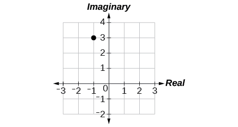
Parametric Equations
For the following exercises, eliminate the parameter to rewrite the parametric equation as a Cartesian equation.
Parameterize (write a parametric equation for) each Cartesian equation by using and for
Parameterize the line from to so that the line is at at and at
Parametric Equations: Graphs
For the following exercises, make a table of values for each set of parametric equations, graph the equations, and include an orientation; then write the Cartesian equation.
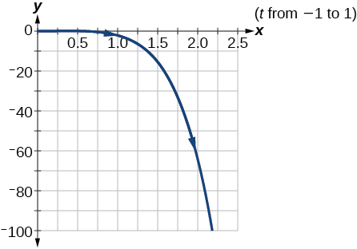
A ball is launched with an initial velocity of 80 feet per second at an angle of 40° to the horizontal. The ball is released at a height of 4 feet above the ground.
ⓐ Find the parametric equations to model the path of the ball.
ⓑ Where is the ball after 3 seconds?
ⓒ How long is the ball in the air?
The ball is 14 feet high and 184 feet from where it was launched.
3.3 seconds
Vectors
For the following exercises, determine whether the two vectors,andare equal, wherehas an initial point and a terminal point andhas an initial point and a terminal point
and
and
not equal
For the following exercises, use the vectorsandto evaluate the expression.
u − v
2v − u + w
4i
For the following exercises, find a unit vector in the same direction as the given vector.
a = 8i − 6j
b = −3i − j
ij
For the following exercises, find the magnitude and direction of the vector.
Magnitude: Direction:
For the following exercises, calculate
u = −2i + j and v = 3i + 7j
u = i + 4j and v = 4i + 3j
Given v draw v, 2v, and v.
Given the vectors shown in , sketch u + v, u − v and 3v.
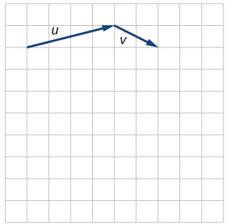
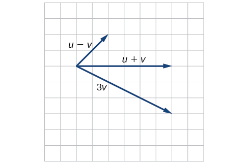
Given initial point and terminal point write the vectorin terms ofandDraw the points and the vector on the graph.
Practice Test
Assume is opposite side is opposite side and is opposite side Solve the triangle, if possible, and round each answer to the nearest tenth, given
Find the area of the triangle in . Round each answer to the nearest tenth.
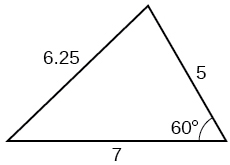
A pilot flies in a straight path for 2 hours. He then makes a course correction, heading 15° to the right of his original course, and flies 1 hour in the new direction. If he maintains a constant speed of 575 miles per hour, how far is he from his starting position?
Convert
to polar coordinates, and then plot the point.
Convert to rectangular coordinates.
Convert the polar equation to a Cartesian equation:
Convert to rectangular form and graph:
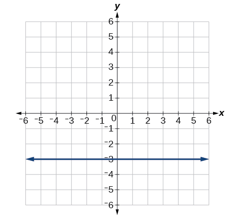
Test the equation for symmetry:
Graph
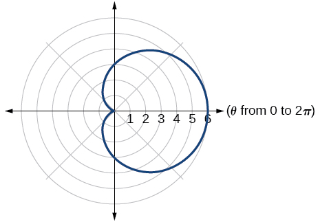
Graph
Find the absolute value of the complex number
Write the complex number in polar form:
Convert the complex number from polar to rectangular form:
Given and evaluate each expression.
Plot the complex number in the complex plane.
Eliminate the parameter to rewrite the following parametric equations as a Cartesian equation:
Parameterize (write a parametric equation for) the following Cartesian equation by using and
Graph the set of parametric equations and find the Cartesian equation:
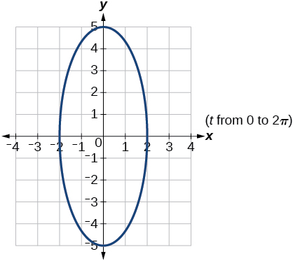
A ball is launched with an initial velocity of 95 feet per second at an angle of 52° to the horizontal. The ball is released at a height of 3.5 feet above the ground.
ⓐFind the parametric equations to model the path of the ball.
ⓑWhere is the ball after 2 seconds?
ⓒHow long is the ball in the air?
For the following exercises, use the vectors u = i − 3j and v = 2i + 3j.
Find 2u − 3v.
−4i − 15j
Calculate
Find a unit vector in the same direction as
Given vectorhas an initial point and terminal point write the vectorin terms ofandOn the graph, drawand
Key terms
dot product given two vectors, the sum of the product of the horizontal components and the product of the vertical components
initial point the origin of a vector
magnitude the length of a vector; may represent a quantity such as speed, and is calculated using the Pythagorean Theorem
resultant a vector that results from addition or subtraction of two vectors, or from scalar multiplication
scalar a quantity associated with magnitude but not direction; a constant
scalar multiplication the product of a constant and each component of a vector
standard position the placement of a vector with the initial point at and the terminal point represented by the change in the x-coordinates and the change in the y-coordinates of the original vector
terminal point the end point of a vector, usually represented by an arrow indicating its direction
unit vector a vector that begins at the origin and has magnitude of 1; the horizontal unit vector runs along the x-axis and is defined as the vertical unit vector runs along the y-axis and is defined as
vector a quantity associated with both magnitude and direction, represented as a directed line segment with a starting point (initial point) and an end point (terminal point)
vector addition the sum of two vectors, found by adding corresponding components